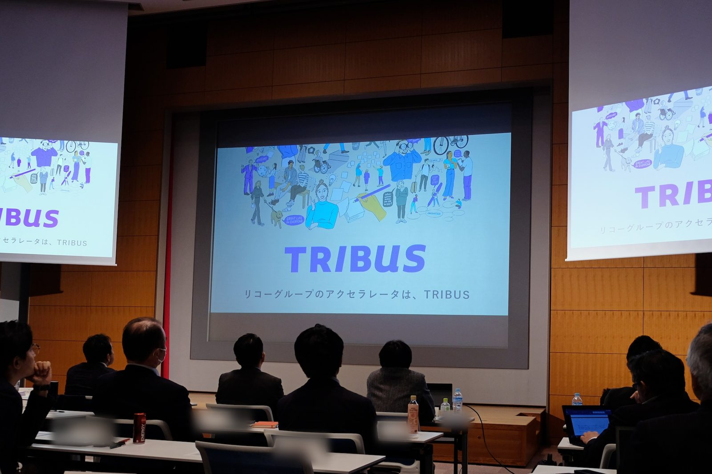
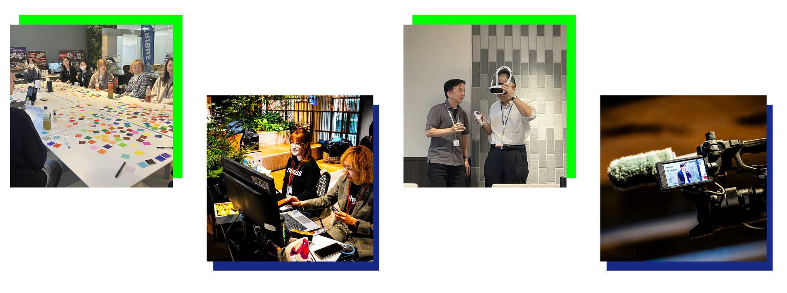

Selected Work — 03
TRIBUS
社員意識調査で「会社が自分の考えを後押ししてくれる」「挑戦できる」が極端に低かった会社に、社員なら誰でも社長に直接提案できる制度を持ち込んだ。社員が自分で解きたいことを決め、部門を越えて仲間を集め、試して学ぶ。それが毎年くり返されるように、制度にした。
Background
「うちの社員は自発性が弱い」への反論から始まった。
相談が来たのは、社員意識調査で「会社が自分の考えを後押ししてくれる」「挑戦できる」という項目が極端に低く、経営層が問題視していたタイミングだった。社長や役員と対話する機会があり、彼らからは「うちの社員は、自分で何かをやりたいという自発的な動きが弱い」という意見をもらった。
私は社内FABスペース「つくる〜む」で、新規事業のアイデアを試そうとする現場の人を何人も見てきていた。だから、こう返した。「そんなことはないんです。みんな色々考えている。ただ『余計なことはせず、目の前のコピー機の仕事に専念しろ』と、現場の部課長が止めているだけです」。そして「現場の部課長が芽を摘んでしまう前に、経営層へ直接提案できる機会を作るのはどうか」と提案した。
そこで生まれたのが、グループの社員なら誰でも新規事業アイデアを提案でき、採択されると予算とチームを得て、社長直属の部署で数年間事業化に専念できる制度だった。
Program Design
社内と社外を、同じ土俵に上げる。
社内の起業家候補と社外のスタートアップが、同じ手順で選ばれ、同じピッチで競い、同じプログラムで事業を磨く。
狙いは2つあった。ひとつは、同じ課題に挑む社外の人を社員が目の前で見て、起業を身近に感じること。もうひとつは、スタートアップに会社のブランド・顧客・技術を使ってもらい、お互いに得をすること。
-
01
応募・書類選考 社内チームとスタートアップが並行して応募。初年度から120件超の社内応募が集まった。
-
02
実証プログラム（仮説検証フェーズ） 選ばれたチームがメンターと一緒に、お客さんの困りごとを掘り下げ、ビジネスモデルを確かめる。社員サポーター制度により400名以上がチームを支援。
-
03
統合ピッチ 社内外のチームが集まる最終選考。審査員は社外VCが中心。1,000名以上の社員がリアルタイムで参加。
-
04
アクセラレーション 採択したチームに予算・人・つながりを出し続け、事業になるまで支える。

Scale & Results
応募と、生まれた事業の数。
（2019–2025）
新規事業数
外部スタートアップ数
制度は、自分が運営を離れた2022年のあとも続いている。上の数字には、引き継いだ人たちが2022年以降に積み上げた分も入っている。
Major Outcomes
- 小型ハンディプロジェクター（1期生） クラウドファンディングで3,400万円超を集め、製品になった。
- ピコ水力発電システム（1期生） 国土交通省・JICAのプロジェクトに採択された。
- アマチュアスポーツ大会DX（3期生） 株式会社として分社化した。
- 水中撮影向け浮力調整器（3期生） グローバルカメラメーカーに技術を譲渡した。
What Changed
反対していた人が、応援する側に変わった。
1年目から120件以上の応募があった。2年目からは、採択されたチームが成果を出すのを見て、1年目は様子見をしていた人たちも手を挙げ始めた。
最初は「部下を取られる」と反対していた現場の部課長や、その上の本部長たちまでが、挑戦する人を応援するようになった。自分の部署の部下が選考を何度も勝ち抜いていくのを見て、上司の見方も変わった。

My Role
提案から運営まで、自分で持った。
経営層への提案から始まり、プログラムの制度設計、選考基準の策定、メンタリング体制の構築、ピッチイベントの企画・運営まで、通してリードした。社長直轄で立ち上げたので、部門をまたいで人や予算を集められた。
運営体制は社内スタッフ5名と社外パートナー5名の10名。運営への異動希望者は自分で面談して選んだ。応募してくる社内起業候補の書類審査と面談を行い、採択された5チーム約20名の事業化を支援した。各チームの予算配分と進捗の確認、そして「このチームに足りない活動・人・専門性は何か」を見極めて外から補うことが、日々の仕事だった。
人が動きたくなる仕組みをつくることも、デザインの仕事だと思うようになった3年間だった。
「社内FABスペースで没頭していた人たちが、TRIBUSで事業家になっていく。それを見届けることが、自分にとって一番の仕事だった。」